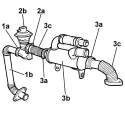

1080C84 EGR VALVE AND HEAT EXCHANGER ASSEMBLY - DISMANTLING AND REASSEMBLING AT THE BENCH
- Path
- Procedures > 10 ENGINE UNIT > 1080 EXHAUST EMISSION CONTROL SYSTEM > 1080C EXHAUST GAS RECIRCULATION SYSTEM (E.G.R.) > 1080C84 EGR VALVE AND HEAT EXCHANGER ASSEMBLY - DISMANTLING AND REASSEMBLING AT THE BENCH
- Kind
- repair procedure (removal / refitting; the operation number is the code)
- Applies to
- engines: 2.0 JTD 8V; all production periods
- Interactive page
- https://sloeber94.github.io/elrnDB-fDct/en/#/244000901
Applies to: engines: 2.0 JTD 8V; all production periods
 Removing
Removing
 Refitting
Refitting1. Open the band (1a) and remove the rigid pipe (1b) connected to the exhaust manifold.
2. Open the band (2a) and remove the EGR valve (2b).
3. Open the bands (3a) and separate the heat exchanger (3b) from the rigid pipes (3c).

Applies to: engines: 2.0 JTD 8V; all production periods
Refitting
Removing- Fit the rigid pipes on the heat exchanger and secure them closing the bands.
- Fit the EGR valve and fasten it to the assembly using the band.
- Fit the rigid pipe connected to the exhaust manifold and secure it to the EGR valve closing the band.